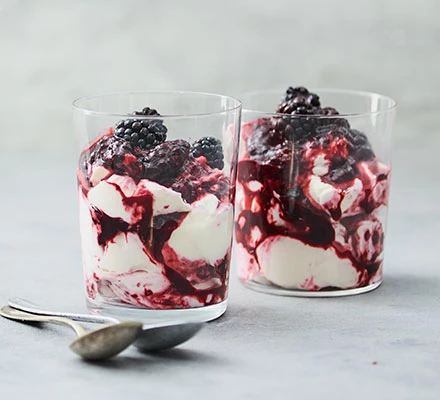
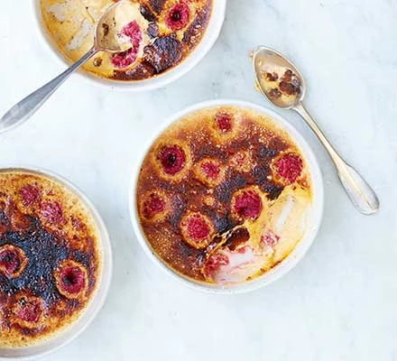

Blackberry & lemon fool
Ingredients
- 200g blackberries , plus extra for the topping
- 3 tbsp icing sugar
- zest and juice of ½ a lemon
- 250ml double cream

Method
STEP 1
Tip the blackberries into a pan with 2 tbsp icing sugar, plus the lemon zest and juice. Simmer until syrupy, then leave to cool. Chill for a few hours.
STEP 2
Whip the double cream with 1 tbsp icing sugar, then swirl through most of the blackberry sauce. Serve in glasses with extra sauce and fresh blackberries on top.
Raspberry brûlée
Ingredients
- 1 vanilla pod
- ½ lemon , pared zest only
- 300ml double cream
- 100g raspberries
- 4 egg yolks
- 2 tbsp golden caster sugar
- 2 tbsp demerara sugar

Method
STEP 1
Split the vanilla pod and scrape the seeds into a pan with the lemon zest and cream. Toss the pod in too. Heat until just before the cream boils – tiny bubbles will be forming at the edges. Turn off the heat and infuse for 15 mins.
STEP 2
Heat oven to 160C/140C fan/gas 3. Put four ramekins into a roasting tin and fill the tin with boiling water so that about 2cm of the ramekins is uncovered.
STEP 3
Divide the raspberries between the ramekins, reserving a few. Whisk the egg yolks and caster sugar, using an electric whisk, until very pale and fluffy, about 3 mins. Remove the zest and vanilla pod from the cooled cream, then slowly stir it into the egg mixture. Transfer to a jug and pour through a sieve into the ramekins, then top with the reserved raspberries. Bake in the oven for 20-25 mins until the custard forms a skin and holds a slight wobble when you nudge the tray. Allow to cool, then chill in the fridge for at least 4 hrs.
STEP 4
If you don’t have a blowtorch, heat the grill to high. Sprinkle demerara sugar over each ramekin and either use a blowtorch to caramelise the top or place them under the grill until the sugar has melted and crisped. Allow to settle for 5 mins before serving."